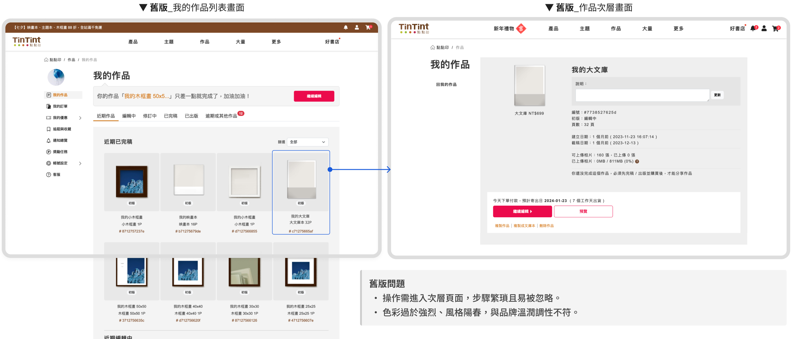

主要操作 CTA 點擊率提升
將「繼續編輯」等 關鍵行動按鈕直接置於作品卡片上，使用者能更快識別並執行操作，有效降低思考與點擊成本，進而提升 CTA 點擊率達 45%。
將「繼續編輯」等 關鍵行動按鈕直接置於作品卡片上，使用者能更快識別並執行操作，有效降低思考與點擊成本，進而提升 CTA 點擊率達 45%。
當附加功能收合後，用戶無需跳轉至其他頁面即可完成操作。根據 用戶回饋與行為數據顯示，操作步驟減少後，使用流程更為直覺，轉換率提升了 15%，用戶平均完成時間也縮短了 30%。
簡化介面後，用戶更容易理解作品狀態與後續操作，客服關於「作品去哪了」、「如何進入編輯器」的 詢問明顯減少。
用戶 管理作品的核心區域，依照不同創作階段（如編輯中、已完稿、已出版...等）分類顯示作品列表。使用者可透過主動操作（如篩選作品類型、查看作品狀態）快速定位目標作品，並根據當前狀態執行最適行動（如繼續編輯、加入購物車、作品欣賞等）。
Team | TinTint 點點印
Role | UIUX Designer
Collaborators | UIUX Designer(1)、PM(1)、FE(1)、BE(1)、CS(3)
[調整背景]
為統一整體網站的設計風格，並簡化舊版中不必要的頁面和資訊，先針對
整體資訊架構進行盤點與梳理，移除重複或多餘內容，
聚焦呈現使用者真正需要的資訊。
在整理過程中發現「作品列表」的操作流程不夠直覺，使用者常需多層點擊才能完成任務。經與團隊夥伴討論後，決定重新設計該區塊，同時 全面對齊設計系統 2.0 的樣式與規範，提升整體體驗一致性與操作效率。
✦ Empathy Map
✦ Personas
✦ User Story Maps
✦ Interview Method
✦ Competitive Audit
✦ Value Proposition
✦ Information Architecture
✦ Story Board
✦ User Flow
✦ Wireframe
✦ Lo-Fi Prototype
✦ Usability Test
✦ Visual Design System
✦ UI Kit
✦ Mockup
✦ Usability Test
✦ QA
雖無大規模調研，仍透過數據、客服回饋與競品分析，歸納出操作痛點與共通模式。據此重塑資訊架構與動線，聚焦提升操作效率與資訊清晰度，優化整體體驗。
明確標示作品狀態與主要操作，減少使用者思考負擔。
將核心按鈕前置至卡片，避免多層操作，提升效率。
優化對比與留白、統一文字對齊與間距，讓畫面更整潔易讀。
移除不必要資訊與干擾元素，降低學習門檻。
為了讓產品在擴充功能或優化介面時具備一致且清晰的結構，先對盤點現有功能，釐清現行設計中可能存在的混亂或規格不一致問題。接著將功能邏輯整理為資訊架構與規格文件，幫助團隊更快理解整體產品脈絡與使用者操作邏輯。

我先繪製了 UI Flow，將頁面路徑與層級視覺化，協助團隊辨識舊版的痛點，例如操作層級過深、「繼續編輯」需多次點擊才能到達對應頁面，以及按鈕主次層級不明確。藉由這些洞察，我們優化了介面結構與資訊架構，使層級更清晰、流程更直覺。



藉由低擬真原型與團隊快速溝通配置邏輯，驗證操作假說。本次優化核心在於「資訊去蕪存菁」，將非必要干擾收納至次層級，確保介面簡潔且重點清晰。
將次要的操作按鈕（如：詳細資訊、複製、刪除等）收納至作品卡片的 「More」選單。透過功能收疊，保持列表介面清爽，讓使用者專注於核心任務。
移除對一般使用者非必要的後台數據，僅保留關鍵資訊。若需查看細節，則引導至 「詳細資訊 Modal」 呈現，有效降低首屏的認知負擔與視覺壓力。


[Before]
資訊密集缺乏重點強調，使用者需要額外搜尋才能找到關鍵內容。
[After]
透過 Tab 區分作品狀態（如「編輯中」、「已完成」），每張卡片聚焦呈現重點資訊：清楚的標題、縮圖與狀態對應資訊標示。
輔助操作如複製、刪除、分享、詳細資訊...等則收納於 More 選單中，減少畫面負擔，無須再進入第二層頁面。
[Before]
缺乏明確操作按鈕，使用者需點擊作品卡片並進入下一層頁面才能執行操作，容易忽略或增加操作時間。
[After]
每張作品卡片
根據狀態不同，皆設有明顯的主要行動按鈕，如編輯中的作品是「繼續編輯」，以完稿的作品是「加入購物車」可直接操作，無需跳轉頁面，提升使用效率。


[Before]
用戶需點擊作品卡片才可以看到動作按鈕，且所有選項都直接顯示在頁面上，增加視覺負擔且干擾理解主要操作。
[After]
More 按鈕（三個點圖示）讓額外功能像是複製、刪除...等，不佔用主要空間，但仍然容易存取。
Before
元素密集且顏色偏重，缺乏層級引導，使用者視線需來回瀏覽，增加負擔。
After
提升卡片與背景的對比度，並運用醒目色引導使用者聚焦操作行為，使畫面閱讀更輕鬆直覺。
Before
桃紅與深灰的強烈對比讓視覺較為尖銳，區塊分隔不明確，卡片切割過細，降低整體閱讀性。
After
採用柔和、低飽和的配色（細緻灰＋蜜桃橘），營造溫潤親和的視覺氛圍。同時強化區塊結構，更符合現代設計。
Before
文字與按鈕區塊略顯擁擠，字級與間距偏小，降低閱讀舒適度。
After
透過更清晰的標題層級、適當的字距與留白，提升整體排版節奏；同時將關聯內容歸納在同一視覺區塊，強化資訊結構與視線引導。
Before
版面風格偏早期網頁設計，邊角銳利、分隔生硬，缺乏視覺層次與柔和感。
After
透過圓角應用於按鈕、卡片與選單，營造更友善且現代化的風格；搭配適度留白與陰影，提升界面呼吸感與整體質感，使用者更易聚焦於主要內容。


原以為越多資訊越清楚，實際上過多細節反而造成干擾。精簡後，使用者反而更快找到重點。
把「繼續編輯」、「加入購物車」、「作品欣賞」...等關鍵動作按鈕直接放在卡片上，讓動作成為視覺焦點，提升使用者對下一步的確定感。
優化後的畫面更整齊、分明，不少使用者回饋「比較好找」、「不會眼花」，證明視覺層次的影響力很大。
畫面上不需要一次呈現所有可能，反而要在適當時機給出明確建議。讓使用者在不同狀態都知道「現在該做什麼」，附加功能做收合，減少認知負擔。